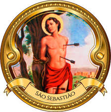

|  | Comunidade São sebastião, comunidade formada por agricultores de hortaliças e café, localizada na região rural de Londrina-PR perto de Lerroville-PR, composta por 47 familias tendo a primeira missa rezada em baixo de um lindo pé de manga que até hoje se encontra ao lado da igreja. |
|
|